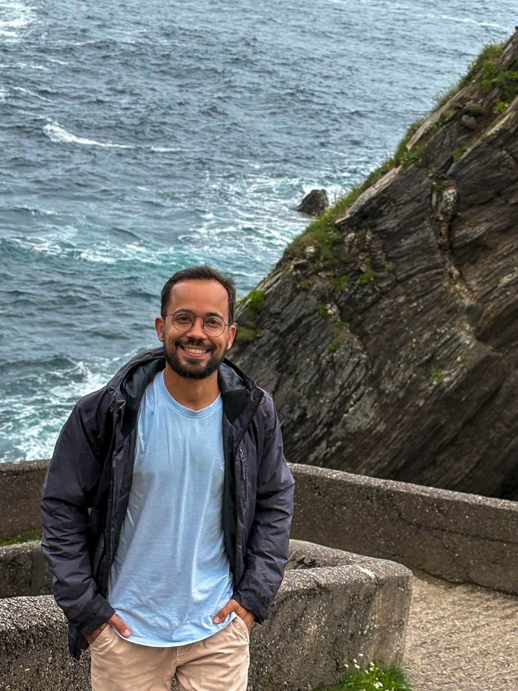

A little about
the person behind the camera.

Stories, places and people.
I’m Allyson, a Brazilian filmmaker from João Pessoa, currently based in Ireland. My path into visual storytelling comes from a curiosity about the world and a desire to notice the details that can easily pass by: a look, a landscape, the atmosphere of a place, or the feeling of being part of an important moment.
I’ve always been drawn to nature, travel, trails and new experiences. Moving between cultures has given me even more reasons to observe, listen and stay curious. These interests naturally find their way into the way I see and shape a film.
My professional background also includes environmental and administrative work. Those experiences helped me develop a practical sense of responsibility, organisation and attention to detail — qualities I bring with me to every project, from planning and filming to the final edit.
Today, through AS Visual Stories, I’m developing films across weddings, events and personal cinematic stories. I’m interested in honest images, thoughtful editing and films that do more than document what happened — films that help people feel the story again.
Based in Ireland · Available for projects elsewhere